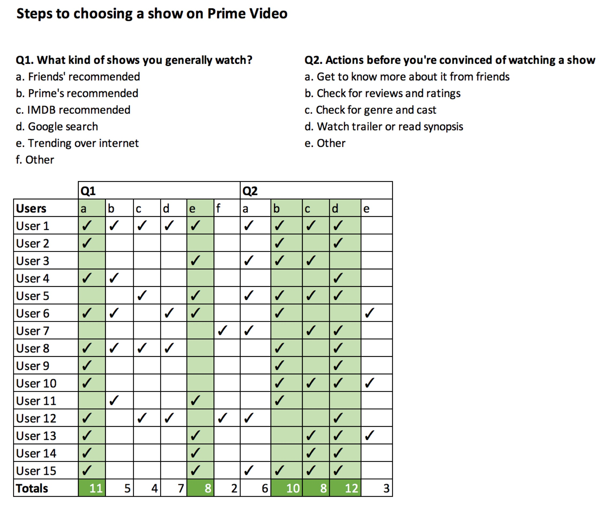
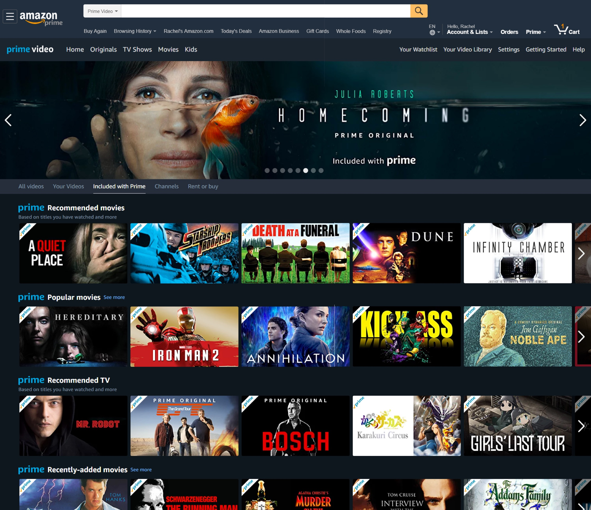

Choosing the right content on OTT media platforms - Case study
Unable to choose the right content over OTT platforms like Amazon Prime Video, Netflix, Hulu, HBO Now etc. is a daily issue for users like me and my friends. This is the reason why I chose this subject for my case study and made an attempt at making modifications to the existing way of options that are displayed in one of these platforms.
The first step was to understand Why this happens:
1. Too many options at once
A plethora of choices or varieties makes it tough for our brain to choose from it, sometimes ending up choosing nothing at all. Here’s a study demonstrated at Columbia University knows as ‘jam study’.
In this study, supermarket shoppers were given the option of choosing from a table offering six samples of jam or one displaying 24 varieties.
While more people stopped at the table with 24 choices, only 3 percent went on to purchase a jar, compared to a third of all shoppers who stopped at the table with just six varieties.
Too many options also causes the next problem which is…
2. Decision paralysis
Decision paralysis means a situation in which someone is unable to decide as a result of overanalyzing data or overthinking a problem.
When we see an umpteen options on these platforms, and that too without any parameter to compare to each other, it takes a lot of time to make a decision which then leads to decision paralysis which diminishes the user’s satisfaction.
The research
Every year, these media services spend millions of dollars on consumer research to build an algorithm to display relevant content to its users. I thought of modifying the algorithm with a small research survey of my own.
According to my research, the biggest factor that could influence a user’s choice of selecting a program is friends’ recommendations. I believe that this one big change can impact the decision making positively and engage a user for a longer time.
It was important to understand the users behavior of:
1. Source from where they got to know about the content
2. Steps before they’re convinced to watch the content
I created a user set of 15 people who were actively using Prime Video. Even though it’s a very small user set, the responses had a lot of similarities which helped in moving forward with the solution.

As per the results, there are 4-5 parameters that a user would like to see before deciding to watch. Hence, I came up with a possible user flow for this solution.
The solution
Current design

To get recommendations from friends, the user needs to add friends to the Prime account by providing his/her friends’ registered email ID. This helps the platform know that the user has authorized the account to receive recommendations.

The first section in the home screen is replaced by the shows that the user had stopped watching earlier. It is a common user behavior that they might want to continue watching a movie/series.
According to my research, Friends’ recommendations is the most important factor that influences a user for choosing a show and will also passively let the users know what their friends are up to.
Popular movies allows the user to explore something new. They would likely want to explore something new.
If the user is still not able to choose, we can offer him/her genres to explore, which is also one of the important parameters of making the choice.
The pop up now gives the ability to see the friends who recommended this show and also a button to recommend this to any of his/her friends.
Takeaways
Cognitive load by showing too many choices is not benefiting Prime Video, it is only increasing the overall decision-making time. My study proposed clients like to watch shows prescribed by their Friends 2x more in contrast with the Prime Video proposals.
As my micro survey was proposing different solutions from the current approach from Prime Video has encouraged me to conduct a bigger survey regarding it, which might not only help Prime Video but all other companies to build better products for its users.